토목산업기사 (2015-09-19 기출문제)
1과목: 응용역학
1. 그림과 같은 내민보에서 C점의 전단력(VC)과 휨모멘트(MC)는 각각 얼마인가?
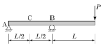
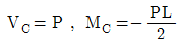
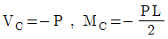
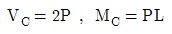
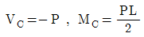
(정답률: 52%)

2. 트러스를 해석하기 위한 기본가정 중 옳지 않은 것은?
- 부재들은 마찰이 없는 힌지로 연결되어 있다.
- 부재 양단의 힌지 중심을 연결한 직선은 부재축과 일치한다.
- 모든 외력은 절점에 집중하중으로 작용한다.
- 하중 작용으로 인한 트러스 각 부재의 변형을 고려한다.
(정답률: 65%)
3. 그림과 같은 3힌지 라멘에 등분포하중이 작용할 경우 A점의 수평반력은?
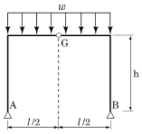
- 0
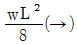
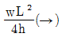
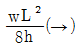
(정답률: 66%)
4. 일단고정 타단자유로 된 장주의 좌굴하중이 10tf일 때 양단힌지이고 기타 조건은 같은 장주의 좌굴하중은?
- 2.5tf
- 20tf
- 40tf
- 160tf
(정답률: 67%)
5. 그림과 같이 네 개의 힘이 평형 상태에 있다면 A점에 작용하는 힘 P와 AB사이의 거리 x는?
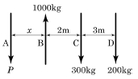
- P=400kgf, x=2.5m
- P=400kgf, x=3.6m
- P=500kgf, x=2.5m
- P=500kgf, x=3.2m
(정답률: 65%)
6. 그림에서 지점 C의 반력이 영(零)이 되기 위해 B점에 작용시킬 집중하중의 크기는?
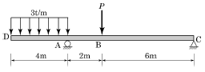
- 8 tf
- 10 tf
- 12 tf
- 14 tf
(정답률: 66%)
7. 아래의 표에서 설명하는 것은?
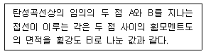
- 제 1 공액보의 정리
- 제 2 공액보의 정리
- 제 1 모멘트면적 정리
- 제 2 모멘트면적 정리
(정답률: 65%)
8. 다음과 같은 단순보에서 최대 휨응력은? (단, 단면은 폭 40cm, 높이 50cm의 직사각형이다.)
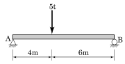
- 72kgf/cm2
- 87kgf/cm2
- 135kgf/cm2
- 150kgf/cm2
(정답률: 50%)
9. P=12tf 의 무게를 매달은 그림과 같은 구조물에서 T1이 받는 힘은?
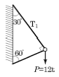
- 10.39tf(인장)
- 10.39tf(압축)
- 6tf(인장)
- 6tf(압축)
(정답률: 69%)
10. 다음 중 부정정 트러스를 해석하는 데 적합한 방법은?
- 모멘트 분배법
- 처짐각법
- 가상일의 원리
- 3연모멘트법
(정답률: 48%)
11. 경간 10m, 폭 20cm, 높이 30cm인 직사각형 단면의 단순보에서 전 경간에 등분포하중 w=2tf/m 가 작용할때 최대 전단응력은?
- 25kgf/cm2
- 30kgf/cm2
- 35kgf/cm2
- 40kgf/cm2
(정답률: 60%)
12. 단면적 A=20cm2, 길이 L=100cm인 강봉에 인장력 P=8t을 가하였더니 길이가 1cm 늘어났다. 이 강봉의 포아송수 m=3이라면 전단탄성계수 G는?
- 15000kg/cm2
- 45000kg/cm2
- 75000kg/cm2
- 95000kg/cm2
(정답률: 50%)
13. 다음 그림과 같이 직교좌표계 위에 있는 사다리꼴 도형 OABC 도심의 좌표(
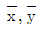
)는? (단, 좌 단위는cm)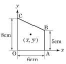
- (2.54, 3.46)
- (2.77, 3.31)
- (3.34, 3.21)
- (3.54, 2.74)
(정답률: 55%)
14. “여러 힘의 모멘트는 그 합력의 모멘트와 같다.”라는 것은 무슨 원리인가?
- 가상(假想)일의 원리
- 모멘트 분배법
- Varignon의 원리
- 모어(Mohr)의 정리
(정답률: 75%)
15. 경간 5m, 높이 30cm, 폭 20cm의 단면을 갖는 단순보에 등분포하중 W=400kgf/m가 만재하여 있을 때 최대 처짐은? (단, E=1×105kgf/cm2)
- 4.71cm
- 2.67cm
- 1.27cm
- 0.72cm
(정답률: 53%)
16. 다음 인장부재의 변위를 구하는 식으로 옳은 것은? (단, 단면적은 A, 탄성계수는 E)
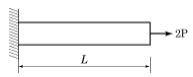
- PL/EA
- 2PL/EA
- 3PL/EA
- 4PL/EA
(정답률: 71%)
17. 그림과 같은 1차 부정정 구조물의 A지점의 반력은? (단, EI는 일정하다.)
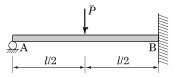
- 5P/16
- 11P/16
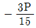
- 5P/32
(정답률: 66%)
18. 폭 12cm, 높이 20cm인 직사각형 단면의 최소 회전반지름 r은?
- 5.81cm
- 3.46cm
- 6.92cm
- 7.35cm
(정답률: 53%)
19. 그림과 같은 단주에서 편심거리 e에 P=30tf 가 작용할 때 단면에 인장력이 생기지 않기 위한 의 한계는?
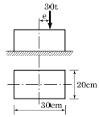
- 3.3cm
- 5cm
- 6.7cm
- 10cm
(정답률: 60%)
20. 그림과 같은 연속보 B점의 휨모멘트 MB는?
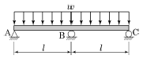
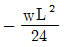
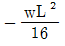
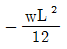
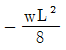
(정답률: 62%)
2과목: 측량학
21. 사진측량의 특징에 대한 설명으로 옳지 않은 것은?
- 기상의 영향을 받지 않고 전천후 측량을 수행할 수 있다.
- 광범위한 지역에 대한 동시 측량이 가능하다.
- 정성적 측량이 가능하다.
- 축척 변경이 용이하다.
(정답률: 79%)
22. 촬영고도 3,000m에서 초점거리 15cm의 카메라로 평지를 촬영한 밀착사진의 크기가 23cm×23cm이고 종중복도가 57%, 횡중복도가 30%일 때 이 연직사진의 유효 모델 면적은?
- 5.4km2
- 6.4km2
- 7.4km2
- 8.4km2
(정답률: 56%)
23. 교점(I.P.)의 위치가 기점으로부터 143.25m일 때 곡선반지름 150m, 교각 58°14′24″인 단곡선을 설치하고자 한다면 곡선시점의 위치는? (단, 중심말뚝 간격20m)
- No.2 + 3.25
- No.2 + 19.69
- No.3 + 9.69
- No.4 + 3.56
(정답률: 53%)
24. 평균유속 관측방법 중 3점법을 사용하기 위한 관측유속으로 짝지어진 것은? (단, h는 전체 수심)
- 수면에서 0.1h, 0.4h, 0.9h 지점의 유속
- 수면에서 0.1h, 0.4h, 0.8h 지점의 유속
- 수면에서 0.2h, 0.4h, 0.8h 지점의 유속
- 수면에서 0.2h, 0.6h, 0.8h 지점의 유속
(정답률: 73%)
25. 완화곡선 중 주로 고속도로에 사용되는 것은?
- 3차 포물선
- 클로소이드(clothoid) 곡선
- 반파장 싸인(sine) 체감곡선
- 렘니스케이트(lemniscate) 곡선
(정답률: 80%)
26. 등고선에 관한 설명으로 틀린 것은?
- 간곡선은 계곡선보다 가는 실선으로 나타낸다.
- 주곡선 간격이 10m이면 간곡선 간격은 5m이다.
- 계곡선은 주곡선보다 굵은 실선으로 나타낸다.
- 계곡선 간격은 주곡선 간격의 5배이다.
(정답률: 49%)
27. 원곡선에서 장현 L과 그 중앙 종거 M을 관측하여 반지름 R을 구하는 식으로 옳은 것은?
- L2/8M
- L2/4M
- L2/2M
- L2/M
(정답률: 57%)
28. 폐합다각측량에서 각 관측보다 거리 관측 정밀도가 높을 때 오차를 배분하는 방법으로 옳은 것은?
- 해당 측선 길이에 비례하여 배분한다.
- 해당 측선 길이에 반비례하여 배분한다.
- 해당 측선의 위, 경거의 크기에 비례하여 배분한다.
- 해당 측선의 위, 경거의 크기에 반비례하여 배분한다.
(정답률: 60%)
29. 어떤 측선의 길이를 3군으로 나누어 관측하여 표와 같은 결과를 얻었을 때, 측선 길이의 최확값은?
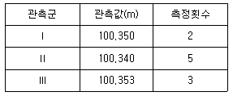
- 100.344m
- 100.346m
- 100.348m
- 100.350m
(정답률: 70%)
30. 수준측량에서 전시와 후시의 거리를 같게 하여도 제거되지 않는 오차는?
- 시준선과 기포관축이 평행하지 않을 때 생기는 오차
- 표척 눈금의 읽음오차
- 광선의 굴절오차
- 지구곡률 오차
(정답률: 51%)
31. 그림과 같이 A점에서 B점에 대하여 장애물이 있어 시준을 못하고 B′점을 시준하였다. 이때 B점의 방향각 TB 를 구하기 위한 보정각(x)을 구하는 식으로 옳은것은? (단, e ＜1.0m, p=206265, S=4km)
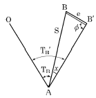
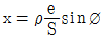
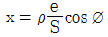
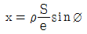
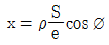
(정답률: 59%)
32. 지형도를 작성할 때 지형 표현을 위한 원칙과 거리가 먼 것은?
- 기복을 알기 쉽게 할 것
- 표현을 간결하게 할 것
- 정량적 계획을 엄밀하게 할 것
- 기호 및 도식을 많이 넣어 세밀하게 할 것
(정답률: 76%)
33. 축척 1:1200 지형도 상에서 면적을 측정하는데 축척을 1:1000으로 잘못 알고 면적을 산출한 결과 1200m2를 얻었다면 정확한 면적은?(오류 신고가 접수된 문제입니다. 반드시 정답과 해설을 확인하시기 바랍니다.)
- 8,333m2
- 12,368m2
- 15,806m2
- 17,280m2
(정답률: 44%)
34. A점에서 출발하여 다시 A점에 되돌아오는 다각측량을 실시하여 위거오차 20cm, 경거오차 30cm가 발생하였다. 전 측선길이가 800m일 때 다각측량의 정밀도는?
- 1/1000
- 1/1730
- 1/2220
- 1/2630
(정답률: 59%)
35. 평판을 설치할 때 고려하여야 할 조건과 거리가 먼 것은?
- 수평 맞추기
- 교회 맞추기
- 중심 맞추기
- 방향 맞추기
(정답률: 68%)
36. 철도에 완화곡선을 설치하고자 할 때 캔트(cant)의 크기 결정과 직접적인 관계가 없은 것은?
- 레일간격
- 곡선반지름
- 원곡선의 교각
- 주행속도
(정답률: 57%)
37. 삼각측량에서 B점의 좌표 XB=50.000m, YB=200.000m, BC의 길이 25.478m, BC의 방위각 77°11′56″일 때 C점의 좌표는?
- XC=55.645m, YC=175.155m
- XC=55.645m, YC=224.845m
- XC=74.845m, YC=194.355m
- XC=74.845m, YC=2⑤.645m
(정답률: 63%)
38. 그림에서 B점의 지반고는? (단, HA=39.695m)
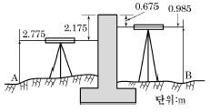
- 39.4⑤m
- 39.985m
- 42.985m
- 46.3⑤m
(정답률: 57%)
39. 경중률에 대한 설명으로 틀린 것은?
- 관측횟수에 비례한다.
- 관측거리에 반비례한다.
- 관측값의 오차에 비례한다.
- 사용기계의 정밀도에 비례한다.
(정답률: 55%)
40. 기초터파기 공사를 하기 위해 가로, 세로, 깊이를 줄자로 관측하여 다음과 같은 결과를 얻었다. 토공량과 여기에 포함된 오차는?
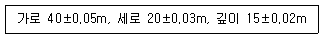
- 6,000±28.4m3
- 6,000±48.9m3
- 12,000±28.4m3
- 12,000±48.9m3
(정답률: 55%)
3과목: 수리학
41. 직경 20cm인 원형 오리피스로 0.1m3/s의 유량을 유출시키려 할 때 필요한 수심(오리피스 중심으로부터 수면까지의 높이)은? (단, 유량계수 c = 0.6)
- 1.24m
- 1.44m
- 1.56m
- 2.00m
(정답률: 65%)
42. 등류의 마찰속도 u*를 구하는 공식으로 옳은 것은? (단, H : 수심, I : 수면경사, g : 중력가속도)
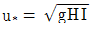
- u*=gHI
- u*=gH2I
- u*=gHI2
(정답률: 70%)
43. 2초에 10m를 흐르는 물의 속도수두는?
- 1.18m
- 1.28m
- 1.38m
- 1.48m
(정답률: 49%)
44. 개수로에 대한 설명으로 옳은 것은?
- 동수경사선과 에너지경사선은 항상 평행하다.
- 에너지경사선은 자유수면과 일치한다.
- 동수경사선은 에너지경사선과 항상 일치한다.
- 동수경사선과 자유수면은 일치한다.
(정답률: 29%)
45. 그림과 같이 지름 3m, 길이 8m인 수문에 작용하는 수평분력의 작용점까지 수심(hc)은?
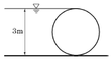
- 2.00m
- 2.12m
- 2.34m
- 2.43m
(정답률: 66%)
46. 유량 147.6L/s를 송수하기 위하여 내경 0.4m의 관을 700m 설치하였을 때의 관로 경사는? (단, 조도계수 n=0.012, Manning공식 적용)
- 3/700
- 2/700
- 3/500
- 2/500
(정답률: 52%)
47. 정수압의 성질에 대한 설명으로 옳지 않은 것은?
- 정수압은 수중의 가상면에 항상 직각방향으로 존재한다.
- 대기압을 압력의 기준(0)으로 잡은 정수압은 반드시 절대압력으로 표시된다.
- 정수압의 강도는 단위면적에 작용하는 압력의 크기로 표시한다.
- 정수 중의 한 점에 작용하는 수압의 크기는 모든 방향에서 같은 크기를 갖는다.
(정답률: 41%)
48. 레이놀즈수가 갖는 물리적인 의미는?
- 점성력에 대한 중력의 비(중력/점성력)
- 관성력에 대한 중력의 비(중력/관성력)
- 점성력에 대한 관성력의 비(관성력/점성력)
- 관성력에 대한 점성력의 비(점성력/관성력)
(정답률: 60%)
49. 관망 문제해석에서 손실수두를 유량의 함수로 표시하여 사용할 경우 지름 D인 원형단면관에 대하여 hL=kQ2으로 표시할 수 있다. 관의 특성 제원에 따라 결정되는 상수 k의 값은? (단, f는 마찰손실계수이고, ℓ은 관의 길이이며 다른 손실은 무시함)
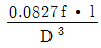
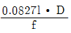
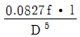
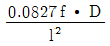
(정답률: 65%)
50. 지름이 20cm인 A관에서 지름이 10cm인 B관으로 축소되었다가 다시 지름이 15cm인 C관으로 단면이 변화되었다. B관의 평균유속이 3m/s일 때 A관과 C관의 유속은? (단, 유체는 비압축성이며, 에너지 손실은 무시한다.)
- A관의 VA=0.75m/s, C관의 VC=2.00m/s
- A관의 VA=1.50m/s, C관의 VC=1.33m/s
- A관의 VA=0.75m/s, C관의 VC=1.33m/s
- A관의 VA=1.50m/s, C관의 VC=0.75m/s
(정답률: 62%)
51. 한계 후루드수(Froude number)를 사용하여 구분할수 있는 흐름 특성은?
- 등류와 부등류
- 정류와 부정류
- 층류와 난류
- 상류와 사류
(정답률: 66%)
52. 대수층의 두께 2m, 폭 1.2m이고 지하수 흐름의 상‧하류 두 점 사이의 수두차는 1.5m, 두 점 사이의 평균거리 300m, 지하수 유량이 2.4m3/d일 때 투수계수는?
- 200m/d
- 225m/d
- 267m/d
- 360m/d
(정답률: 51%)
53. 단면적 2.5cm2, 길이 1.5m인 강철봉이 공기중에서 무게가 28N이었다면 물(비중=1.0) 속에서 강철봉의 무게는?
- 2.37N
- 2.43N
- 23.72N
- 24.32N
(정답률: 33%)
54. 물의 성질에 대한 설명으로 옳지 않은 것은? (단, Cw: 물의 압축률, Ew : 물의 체적탄성률, 0℃에서의 일정한 수온 상태)
- 물의 압축률이란 압력변화에 대한 부피의 감소율을 단위부피당으로 나타낸 것이다.
- 기압이 증가함에 따라 Ew는 감소하고 Cw는 증가한다.
- Cw와 Ew의 상관식은 Cw=1/Ew이다.
- Ew는 Cw값보다 대단히 크다.
(정답률: 54%)
55. 뉴턴유체(Newtonian fluid)에 대한 설명으로 옳은 것은?
- 전단속도 (dv/dy)의 크기에 따라 선형으로 점도가 변한다.
- 전단응력(τ)과 전단속도 (dv/dy)의 관계는 원점을 지나는 직선이다.
- 물이나 공기 등 보통의 유체는 비뉴턴유체이다.
- 유체가 압력의 변화에 따라 밀도의 변화를 무시할 수 없는 상태가 된 유체를 의미한다.
(정답률: 63%)
56. 지름 20cm, 길이가 100m인 관수로 흐름에서 손실수두가 0.2m라면 유속은? (단, 마찰손실 계수 f=0.03이다.)
- 0.61m/s
- 0.57m/s
- 0.51m/s
- 0.48m/s
(정답률: 52%)
57. 한계수심 hc와 비에너지 he와의 관계로 옳은 것은? (단, 광폭직사각형 단면인 경우)
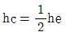
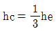
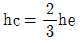
- hc=2he
(정답률: 71%)
58. 굴착정의 유량 공식으로 옳은 것은? (여기서 C : 피압대수층의 두께, K : 투수계수, h : 압력수면의 높이, h0 : 우물안의 수심, R : 영향원의 반지름, r0 : 우물의 반지름)
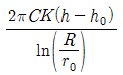
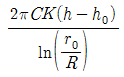
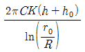
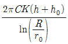
(정답률: 63%)
59. 다음 설명 중 옳지 않은 것은?
- 베르누이 정리는 에너지 보존의 법칙을 의미한다.
- 연속 방정식은 질량보존의 법칙을 의미한다.
- 부정류(unsteady flow)란 시간에 대한 변화가 없는 흐름이다.
- Darcy법칙의 적용은 레이놀즈수에 대한 제한을 받는다.
(정답률: 66%)
60. 4각 위어 유량(Q)과 수심(h)의 관계가 Q∝h3/2일 때, 3각 위어의 유량(Q)과 수심(h)의 관계로 옳은 것은?
- Q∝h1/2
- Q∝h3/2
- Q∝h2
- Q∝h5/2
(정답률: 58%)
4과목: 철근콘크리트 및 강구조
61. fck=24MPa, fy=300MPa, bω=400mm, d=500mm인 직사각형 철근콘크리트보에서 콘크리트가 부담하는 공칭 전단강도(Vc)는 얼마인가?
- 1⑤.7kN
- 110.1kN
- 142.7kN
- 163.3kN
(정답률: 65%)
62. 다음 중 용접이음을 한 경우 용접부의 결함을 나타내는 용어가 아닌 것은?
- 언더컷(undercut)
- 필렛(fillet)
- 크랙(crack)
- 오버랩(overlap)
(정답률: 75%)
63. 강도 설계법에서 1방향 슬래브(slab)의 구조세목에 관한 사항 중 틀린 것은?
- 1방향 슬래브의 두께는 최소 100mm이상이어야 한다.
- 슬래브의 정모멘트 철근 및 부모멘트 철근의 중심 간격은 위험단면에서는 슬래브 두께의 2배이하이어야하고, 또한 300mm 이하로 하여야 한다.
- 슬래브의 정모멘트 철근 및 부모멘트 철근의 중심간격은 위험단면 이외의 단면에서는 슬래브 두께의 3배이하이어야 하고, 또한 600mm 이하로 하여야 한다.
- 1방향 슬래브에서는 정모멘트 철근 및 부모멘트 철근에 직각방향으로 수축ㆍ온도철근을 배치하여야 한다.
(정답률: 60%)
64. 강도설계법에서 전단 보강 철근의 공칭전단강도 Vs가 (2√fck/3)bωd 를 초과하는 경우에 대한 설명으로 옳은 것은?
- 전단철근을 d/4이하, 600mm 이하로 배치해야 한다.
- 전단철근을 d/2이하, 300mm 이하로 배치해야 한다.
- 전단철근을 d/4이하, 300mm 이하로 배치해야 한다.
- bωd의 단면을 변경하여야 한다.
(정답률: 58%)
65. 다음 중'피복두께'에 대한 설명으로 적합한 것은?
- 콘크리트 표면과 그에 가장 가까이 배치된 주철근 표면 사이의 콘크리트 두께
- 콘크리트 표면과 그에 가장 가까이 배치된 부철근 표면 사이의 콘크리트 두께
- 콘크리트 표면과 그에 가장 가까이 배치된 가외철근 표면 사이의 콘크리트 두께
- 콘크리트 표면과 그에 가장 가까이 배치된 철근 표면 사이의 콘크리트 두께
(정답률: 44%)
66. 철근의 간격제한에 대한 설명으로 틀린 것은?
- 동일평면에서 평행한 철근 사이의 수평 순간격은 25mm 이상, 철근의 공칭지름이상으로 하여야 한다.
- 상단과 하단에 2단 이상으로 배치된 경우 상하 철근은 동일연직면 내에 배치되어야 하고, 이때 상하 철근의 순간격은 25mm 이상으로 하여야 한다.
- 나선철근 또는 띠철근이 배근된 압축부재에서 축방향 철근의 순간격은 40mm이상, 또한 철근 공칭지름의 1.5배 이상으로 하여야 한다.
- 벽체 또는 슬래브에서 휨 주철근의 간격은 벽체나 슬래브 두께의 5배 이하로 하여야 하고, 또한 800mm이하로 하여야 한다.
(정답률: 56%)
67. 강도설계법으로 철근콘크리트 부재의 설계시에 사용되는 강도감소계수가 잘못된 것은?
- 인장지배단면 : 0.85
- 전단력을 받는 부재 : 0.70
- 무근 콘크리트의 휨모멘트 : 0.55
- 압축지배 단면 중 나선 철근으로 보강된 철근콘크리트 부재 : 0.70
(정답률: 51%)
68. 보의 휨파괴에 대한 설명 중 틀린 것은?
- 과소철근보는 철근이 먼저 항복하게 되지만 철근은 연성이 크기 때문에 파괴는 단계적으로 일어난다.
- 과다철근보는 철근량이 많기 때문에 더욱 느린 속도로 파괴되고 위험예측이 가능하다.
- 인장철근이 항복강도 fy에 도달함과 동시에 콘크리트도 극한변형률에 도달하여 파괴되는 보를 균형철근보라 한다.
- 인장으로 인한 파괴 시 중립축은 위로 이동한다.
(정답률: 58%)
69. 단면이 300×500mm이고, 150mm2의 PS 강선 6개를 강선군의 도심과 부재단면의 도심축이 일치하도록 배치된 프리텐션 PC 부재가 있다. 강선의 초기 긴장력이 1,000MPa일 때 콘크리트의 탄성변형에 의한 프리스트레스의 감소량은? (단, n=6)
- 36MPa
- 30MPa
- 6MPa
- 4.8MPa
(정답률: 63%)
70. 다음 그림과 같은 직사각형 단철근 보에서 강도 설계법을 사용할 때 콘크리트의 등가직사각형 응력블록의 깊이(a)는 얼마인가? (단, fck=21MPa, fy=300MPa)
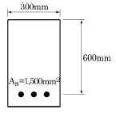
- 84mm
- 102mm
- 153mm
- 200mm
(정답률: 68%)
71. 보통 강재의 용접에서 용접봉을 사용할 경우 용접자세에 대하여 적당한 것은?
- 상향 용접자세
- 하향 용접자세
- 횡방향 용접자세
- 눈높이와 같은 자세
(정답률: 65%)
72. fck=24MPa, fy=300MPa일 때 다음 그림과 같은 보의 균형 철근량은?
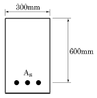
- 5,254mm2
- 5,842mm2
- 6,936mm2
- 7,254mm2
(정답률: 59%)
73. 깊은 보는 주로 어느 작용에 의하여 전단력에 저항 하는가?
- 장부작용(dowel action)
- 골재 맞물림(aggregate interaction)
- 전단마찰(shear friction)
- 아치작용(arch action)
(정답률: 52%)
74. 복철근 단면으로 설계해야 할 경우를 설명한 것으로 틀린 것은?
- 경제성을 우선적으로 고려해야 할 경우
- 정(+), 부(-)의 모멘트를 번갈아 받는 구조의 경우
- 처짐의 증가를 방지해야 할 경우
- 구조상의 사정으로 보의 높이가 제한을 받는 경우
(정답률: 46%)
75. 다음 중 일반적인 철근의 정착 방법 종류가 아닌 것은?
- 묻힘길이에 의한 정착
- 갈고리에 의한 정착
- 약품에 의한 정착
- 철근의 가로 방향에 T형이 되도록 철근을 용접해 붙이는 정착
(정답률: 63%)
76. bw=300mm, d=500mm이고, As=3-D25(=1,520mm2)가 1열로 배치된 단철근 직사각형 단면의 설계휨강도(øMn)는? (단, fck=24MPa, fy=400MPa이고, 이 단면은 인장지배단면이다.)
- 207.9kN∙m
- 232.7kN∙m
- 256.2kN∙m
- 294.8kN∙m
(정답률: 70%)
77. bw=300mm, d=400mm, As=2,400mm2, As′1,200mm2인 복철근 직사각형단면의 보에서 하중이 작용할 경우 탄성처짐량이 1.5mm였다. 5년 후 총 처짐량은 얼마인가?
- 2.0mm
- 2.5mm
- 3.0mm
- 3.5mm
(정답률: 57%)
78. PSC 부재의 프리스트레스 감소원인 중 프리스트레스를 도입한 후 시간의 경과에 의해 발생하는 것은?
- PS강재의 릴랙세이션으로 인한 손실
- PS강재와 쉬스의 마찰로 인한 손실
- 정착장치의 활동으로 인한 손실
- 콘크리트의 탄성변형으로 인한 손실
(정답률: 63%)
79. D-25(공칭직경 : 25.4mm)를 사용하는 압축이형철근의 기본정착길이는? (단, fck=30MPa, fy=400MPa이다.)
- 413mm
- 447mm
- 464mm
- 487mm
(정답률: 57%)
80. 그림과 같이 경간 20m인 PSC 보가 프리스트레스힘(P) 1000kN을 받고 있을 때 중앙단면에서의 상향력(U)을 구하면?
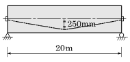
- 30kN
- 40kN
- 50kN
- 60kN
(정답률: 47%)
5과목: 토질 및 기초
81. 흙의 투수계수에 관한 설명으로 틀린 것은?
- 흙의 투수계수는 흙 유효입경의 제곱에 비례한다.
- 흙의 투수계수는 물의 점성계수에 비례한다.
- 흙의 투수계수는 물의 단위중량에 비례한다.
- 흙의 투수계수는 형상계수에 따라 변화한다.
(정답률: 43%)
82. 어떤 흙의 비중이 2.65, 간극률이 36%일 때 다음 중 분사현상이 일어나지 않을 동수경사는?
- 1.9
- 1.2
- 1.1
- 0.9
(정답률: 28%)
83. 어떤 퇴적지반의 수평방향의 투수계수가 4.0×10-3cm/s이고, 수직방향의 투수계수가 3.0×10-3cm/s일 때 등가투수계수는 얼마인가?
- 3.46×10-3cm/s
- 5.0×10-3cm/s
- 6.0×10-3cm/s
- 6.93×10-3cm/s
(정답률: 55%)
84. 현장 토질조사를 위하여 베인 테스트(Vane Test)를 행하는 경우가 종종 있다. 이 시험은 다음 중 어느 경우에 많이 쓰이는가?
- 연약한 점토의 점착력을 알기 위해서
- 모래질 흙의 다짐도를 측정하기 위해서
- 모래질 흙의 내부마찰각을 알기 위해서
- 모래질 흙의 투수계수를 측정하기 위하여
(정답률: 49%)
85. 어떤 흙의 중량이 450g이고 함수비가 20%인 경우이 흙을 완전히 건조시켰을 때 중량은 얼마인가?
- 360g
- 425g
- 400g
- 375g
(정답률: 37%)
86. 유효입경이 0.1mm이고 통과벽분율 80%에 대응하는 입경이 0.5mm, 60%에 대응하는 입경이 0.4mm, 40%에 대응하는 입경이 0.3mm, 20%에 대응하는 입경이 0.2mm일때 이 흙의 균등계수는?
- 2
- 3
- 4
- 5
(정답률: 44%)
87. 흙의 다짐 시험에 대한 설명으로 옳은 것은?
- 다짐에너지가 크면 최적함수비가 크다.
- 다짐에너지와 관계없이 최대건조단위중량은 일정하다.
- 다짐에너지와 관계없이 최적함수비는 일정하다.
- 몰드 속에 있는 흙의 함수비는 다짐에너지에 거의 영향을 받지 않는다.
(정답률: 50%)
88. 지표면이 수평이고 옹벽의 뒷면과 흙과의 마찰각이 0인 연직옹벽에서 Coulomb의 토압과 Rankine의 토압은 어떻게 되는가?
- Coulomb의 토압은 항상 Rankine의 토압보다 크다.
- Coulomb의 토압은 Rankine의 토압보다 클 때도 있고, 작을 때도 있다.
- Coulomb의 토압과 Rankine의 토압은 같다.
- Coulomb의 토압은 항상 Rankine의 토압보다 작다.
(정답률: 50%)
89. 연약지반에 말뚝을 시공한 후, 부의 주면마찰력이 발생되면 말뚝의 지지력은?
- 증가된다.
- 감소된다.
- 변함이 없다.
- 증가할 수도 있고 감소할 수도 있다.
(정답률: 59%)
90. 말뚝의 분류 중 지지상태에 따른 분류에 속하지 않는 것은?
- 다짐 말뚝
- 마찰 말뚝
- Pedestal 말뚝
- 선단 지지 말뚝
(정답률: 50%)
91. 다음 중 표준관입시험으로부터 추정하기 어려운 항목은?
- 극한지지력
- 상대밀도
- 점성토의 연경도
- 투수성
(정답률: 51%)
92. 흙댐에서 수위가 급강하한 경우 사면안정해석을 위한 강도정수 값을 구하기 위하여 어떠한 조건의 삼축압축시험을 하여야 하는가?
- Ouick 시험
- CD 시험
- CU 시험
- UU 시험
(정답률: 61%)
93. 단위중량이 1.6t/m3인 연약지반(ø=0°) 지반에서 연직으로 2m까지 보강 없이 절취할 수 있다고 한다. 이 점토지반의 점착력은?
- 0.4t/m2
- 0.8t/m2
- 1.4t/m2
- 1.8t/m2
(정답률: 66%)
94. 어떤 점토시료를 일축압축 시험한 결과 수평면과 파괴면이 이루는 각이 48°였다. 점토 시료의 내부마찰각은?
- 3°
- 6°
- 18°
- 30°
(정답률: 47%)
95. 어떤 점토의 액성한계 값이 40%이다. 이 점토의 불교란 상태의 압축지수 Cc를 Skempton 공식으로 구하면 얼마인가?
- 0.27
- 0.29
- 0.36
- 0.40
(정답률: 43%)
96. 어떤 흙의 최대 및 최소 건조단위중량이 1.8t/m3과 1.6t/m3이다. 현장에서 이 흙의 상대밀도(relative density)가 60%라면 이 시료의 현장 상대다짐도(relative compaction)는?
- 82%
- 87%
- 91%
- 95%
(정답률: 56%)
97. 자연 상태 흙의 일축압축강도가 0.5kg/cm2고 이 흙을 교란시켜 일축압축강도 시험을 하니 강도가 0.1kg/cm2이었다. 이 흙의 예민비는 얼마인가?
- 50
- 10
- 5
- 1
(정답률: 55%)
98. 직경 30cm의 평판을 이용하여 점토위에서 평판재하시험을 실시하고 극한지지력 15t/m2를 얻었다고 할 때 직경이 2m인 원형기초의 총허용하중을 구하면? (단, 안전율은 3을 적용한다.)
- 8.3ton
- 15.7ton
- 24.2ton
- 32.6ton
(정답률: 48%)
99. 지표면에 집중하중이 작용할 때, 연직응력에 관한 다음 사항 중 옳은 것은? (단, Boussinesq 이론을 사용, E는 Young계수이다.)
- E에 무관하다.
- E에 정비례한다.
- E의 제곱에 정비례한다.
- E의 제곱에 반비례한다.
(정답률: 43%)
100. 2t의 무게를 가진 낙추로서 낙하고 2m로 말뚝을 박을 때 최종적으로 1회 타격당 말뚝의 침하량이 20mm였다. Sander 공식에 의하면 이때 말뚝의 허용지지력은?
- 10t
- 20t
- 67t
- 25t
(정답률: 52%)
6과목: 상하수도공학
101. 펌프의 임펠러 입구에서 정압이 그 수온에 상당하는 포화 증기압 이하가 되면 그 부분의 물이 증발해서 공동이 생기거나 흡입관으로부터 공기가 흡입되어 공동이 생기는 현상은?
- Characteristic Curves
- Specific Speed
- Positive Head
- Cavitation
(정답률: 66%)
102. 상수의 응집침전에서 응집제의 주입률을 시험하는 시험법은?
- Sedimentation test
- Coulmn test
- Water quality test
- Jar test
(정답률: 71%)
103. 활성슬러지법 중 아래와 같은 특징을 갖는 방법은?
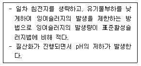
- 계단식 포기법
- 심층 포기법
- 장기 포기법
- 산화구법
(정답률: 35%)
104. 하천의 자정작용 중에서 가장 큰 작용을 하는 것은?
- 침전
- 투과
- 화학적 작용
- 생물학적 작용
(정답률: 60%)
1⑤. 하수처리장 부지선정에 관한 설명으로 옳지 않은 것은?
- 홍수로 인한 침수 위험이 없어야 한다.
- 방류수가 충분히 회석, 혼합되어야 하며 상수도 수원 등에 오염되지 않는 곳을 선택한다.
- 처리장의 부지는 장래 확장을 고려해서 넓게 하며 주거 및 상업지구에 인접한 곳이어야 한다.
- 오수 또는 폐수가 하수처리장까지 가급적 자연유하식으로 유입하고 또한 자연유하로 방류하는 곳이 좋다.
(정답률: 56%)
106. Talbot 공식의 a(분자상수) 값이 1800, b(분모상수) 값이 15일 때, 지속시간 15분에 대한 강우강도는?
- 2.64 mm/h
- 9.92 mm/h
- 10.67 mm/h
- 60.00 mm/h
(정답률: 50%)
107. 하수관거가 갖추어야 할 특성에 대한 설명으로 옳지 않은 것은?
- 외압에 대한 강도가 충분하고 파괴에 대한 저항이 커야 한다.
- 유량의 변동에 대해서 유속의 변동이 큰 수리특성을 지닌 단면형이 좋다.
- 산 및 알칼리의 부식성에 대해서 강해야 한다.
- 이음의 시공이 용이하고, 그 수밀성과 신축성이 높아야 한다.
(정답률: 64%)
108. 우수조정지를 설치하는 위치로서 적절하지 않은 것은?
- 오수발생량이 많은 곳
- 하류관거 유하능력이 부족한 곳
- 방류수로 유하능력이 부족한 곳
- 하류지역 펌프장 능력이 부족한 곳
(정답률: 48%)
109. 다음 중 맛과 냄새의 제거에 주로 사용되는 것은?
- PAC(고분자 응집제)
- 황산반토
- 활성탄
- CuSO4
(정답률: 54%)
110. 하수관거의 유속 및 경사에 대한 설명으로 옳지 않은 것은?
- 유속은 일반적으로 하류로 유하함에 따라 점차 크게한다.
- 경사는 하류로 감에 따라 점차 작아지도록 한다.
- 유속이 느리면 관거의 바닥에 오물이 침전하여 세척비 등 유지관리비가 많이 든다.
- 유속이 빠르면 관거 손상의 우려가 작아지므로 내용년수가 길어진다.
(정답률: 55%)
111. 분류식 하수관거 계통(separated system)의 특징에 대한 설명으로 옳지 않은 것은?
- 오수는 처리장으로 도달, 처리된다.
- 우수관과 오수관이 잘못 연결될 가능성이 있다.
- 관거매설비가 큰 것이 단점이다.
- 강우시 오수가 처리되지 않은 채 방류되는 단점이 있다.
(정답률: 45%)
112. 취수시설을 선정할 때 수원(水源)이 하천, 호소, 댐(저수지)인 경우에 적용할 수 있으며 보통 대량 취수에 적합하고 비교적 안정된 취수가 가능한 것은?
- 취수탑
- 깊은 우물
- 취수틀
- 취수관거
(정답률: 77%)
113. 5,000m3/d의 화학 침전 처리수를 여과지에서 여과속도 5m3/m2∙ h로 여과하고 있다. 역세척은 1일 8회, 1회 역세척 시간은 15분일 경우 1지에 소요되는 이론적인 여과 면적은? (단, 여과지 수는 5지이다.)
- 8.333 m2
- 9.091 m2
- 20.647 m2
- 41.667 m2
(정답률: 28%)
114. 슬러지 반송비가 0.4, 반송슬러지의 농도가 1%일 때 포기조 내의 MLSS 농도는?
- 1,234mg/L
- 2,857mg/L
- 3,325mg/L
- 4,023mg/L
(정답률: 51%)
115. 급수방식을 직결식과 저수조식으로 구분할 때, 저수조식의 적용이 바람직한 경우가 아닌 것은?
- 일시에 다량의 물을 사용하거나 사용수량의 변동이 클 경우
- 배수관의 수압이 급수장치의 사용수량에 대하여 충분한 경우
- 배수관의 압력변동에 관계없이 상시 일정한 수량과 압력을 필요로 하는 경우
- 재해시나 사고 등에 의한 수도의 단수나 감수시에도 물을 반드시 확보해야 할 경우
(정답률: 41%)
116. 하천에 오염원 투여시 시간 또는 거리에 따른 오염지표(BOD, DO, N)와 미생물의 변화 4단계(Whipple의 4단계)의 순서로 옳은 것은?
- ㉠ - ㉡ - ㉢ - ㉣
- ㉠ - ㉢ - ㉡ - ㉣
- ㉡ - ㉠ - ㉢ - ㉣
- ㉡ - ㉢ - ㉠ - ㉣
(정답률: 76%)
117. 계획오수량 산정방법에 대한 설명으로 틀린 것은?
- 생활오수량의 1인1일 최대오수량은 상수도계획상의 1인1일 최대급수량을 감안하여 결정한다.
- 지하수량은 1인1일 평균오수량의 5～10%로 한다.
- 계획시간 최대오수량은 계획1일 최대오수량의 1시간당 수량의 1.3～1.8배를 표준으로 한다.
- 합류식에서 우천시 계획오수량은 원칙적으로 계획시간 최대오수량의 3배 이상으로 한다.
(정답률: 53%)
118. 펌프에 대한 설명으로 틀린 것은?
- 수격현상은 펌프의 급정지시 발생한다.
- 손실수두가 작을수록 실양정은 전양정과 비슷해진다.
- 비속도(비교회전도)가 클수록 같은 시간에 많은 물을 송수할 수 있다.
- 흡입구경은 토출량과 흡입구의 유속에 의해 결정된다.
(정답률: 64%)
119. 처리수량이 5,000m3/d인 정수장에서 8mg/L의 농도로 염소를 주입하였다. 잔류염소농도가 0.3mg/L이었다면 염소요구량은? (단, 염소의 순도는 75%이다.)
- 38.5kg/d
- 51.3kg/d
- 63.3kg/d
- 69.5kg/d
(정답률: 40%)
120. 계획급수량에 대한 설명으로 옳지 않은 것은?
- 계획1일 평균급수량은 계획1일 최대급수량의 50%이다.
- 계획1일 최대급수량은 계획1일 평균급수량 × 계획첨두율로 나타낼 수 있다.
- 계획1일 평균급수량은 계획1인 평균급수량 × 계획급수인구로 나타낼 수 있다.
- 계획1일 최대급수량을 구하기 위한 첨두율은 소규모의 도시일수록 급수량의 변동폭이 커서 값이 커진다.
(정답률: 41%)
MC = 10 kN·m (내민보의 중심점에서 휨모멘트는 최대값인 10 kN·m이다.)
정답이 "" 인 이유는 내민보의 중심점에서 전단력은 0이기 때문이다. 내민보의 중심점에서는 좌우 대칭이며, 좌측과 우측의 전단력이 서로 상쇄되기 때문에 전단력은 0이 된다. 하지만 휨모멘트는 좌측과 우측의 모멘트가 서로 더해져서 최대값이 된다.